| Ano | Campeão | Cidade | |
| 1919 | GE Brasil | Pelotas | |
| 1920 | Guarany FC | Bagé | |
| 1921 | Grêmio FBPA | Porto Alegre | |
| 1922 | Grêmio FBPA | Porto Alegre | |
| 1925 | GE Bagé | Bagé | |
| 1926 | Grêmio FBPA | Porto Alegre | |
| 1927 | SC Internacional | Porto Alegre | |
| 1928 | SC Americano | Porto Alegre | |
| 1929 | EC Cruzeiro | Porto Alegre | |
| 1930 | EC Pelotas | Pelotas | |
| 1931 | Grêmio FBPA | Porto Alegre | |
| 1932 | Grêmio FBPA | Porto Alegre | |
| 1933 | SC São Paulo | Rio Grande | |
| 1934 | SC Internacional | Porto Alegre | |
| 1935 | 9º Regimento de Infantaria (GA Farroupilha) | Pelotas | |
| 1936 | SC Rio Grande | Rio Grande | |
| 1937 | Grêmio FB Santanense | Santana do Livramento | |
| 1938 | Guarany FC | Bagé | |
| 1939 | FC Riograndense | Rio Grande | |
| 1940 | SC Internacional | Porto Alegre | |
| 1941 | SC Internacional | Porto Alegre | |
| 1942 | SC Internacional | Porto Alegre | |
| 1943 | SC Internacional | Porto Alegre | |
| 1944 | SC Internacional | Porto Alegre | |
| 1945 | SC Internacional | Porto Alegre | |
| 1946 | Grêmio FBPA | Porto Alegre | |
| 1947 | SC Internacional | Porto Alegre | |
| 1948 | SC Internacional | Porto Alegre | |
| 1949 | Grêmio FBPA | Porto Alegre | |
| 1950 | SC Internacional | Porto Alegre | |
| 1951 | SC Internacional | Porto Alegre | |
| 1952 | SC Internacional | Porto Alegre | |
| 1953 | SC Internacional | Porto Alegre | |
| 1954 | GE Renner | Porto Alegre | |
| 1955 | SC Internacional | Porto Alegre | |
| 1956 | Grêmio FBPA | Porto Alegre | |
| 1957 | Grêmio FBPA | Porto Alegre | |
| 1958 | Grêmio FBPA | Porto Alegre | |
| 1959 | Grêmio FBPA | Porto Alegre | |
| 1960 | Grêmio FBPA | Porto Alegre | |
| 1961 | SC Internacional | Porto Alegre | |
| 1962 | Grêmio FBPA | Porto Alegre | |
| 1963 | Grêmio FBPA | Porto Alegre | |
| 1964 | Grêmio FBPA | Porto Alegre | |
| 1965 | Grêmio FBPA | Porto Alegre | |
| 1966 | Grêmio FBPA | Porto Alegre | |
| 1967 | Grêmio FBPA | Porto Alegre | |
| 1968 | Grêmio FBPA | Porto Alegre | |
| 1969 | SC Internacional | Porto Alegre | |
| 1970 | SC Internacional | Porto Alegre | |
| 1971 | SC Internacional | Porto Alegre | |
| 1972 | SC Internacional | Porto Alegre | |
| 1973 | SC Internacional | Porto Alegre | |
| 1974 | SC Internacional | Porto Alegre | |
| 1975 | SC Internacional | Porto Alegre | |
| 1976 | SC Internacional | Porto Alegre | |
| 1977 | Grêmio FBPA | Porto Alegre | |
| 1978 | SC Internacional | Porto Alegre | |
| 1979 | Grêmio FBPA | Porto Alegre | |
| 1980 | Grêmio FBPA | Porto Alegre | |
| 1981 | SC Internacional | Porto Alegre | |
| 1982 | SC Internacional | Porto Alegre | |
| 1983 | SC Internacional | Porto Alegre | |
| 1984 | SC Internacional | Porto Alegre | |
| 1985 | Grêmio FBPA | Porto Alegre | |
| 1986 | Grêmio FBPA | Porto Alegre | |
| 1987 | Grêmio FBPA | Porto Alegre | |
| 1988 | Grêmio FBPA | Porto Alegre | |
| 1989 | Grêmio FBPA | Porto Alegre | |
| 1990 | Grêmio FBPA | Porto Alegre | |
| 1991 | SC Internacional | Porto Alegre | |
| 1992 | SC Internacional | Porto Alegre | |
| 1993 | Grêmio FBPA | Porto Alegre | |
| 1994 | SC Internacional | Porto Alegre | |
| 1995 | Grêmio FBPA | Porto Alegre | |
| 1996 | Grêmio FBPA | Porto Alegre | |
| 1997 | SC Internacional | Porto Alegre | |
| 1998 | EC Juventude | Caxias do Sul | |
| 1999 | Grêmio FBPA | Porto Alegre | |
| 2000 | SER Caxias do Sul | Caxias do Sul | |
| 2001 | Grêmio FBPA | Porto Alegre | |
| 2002 | SC Internacional | Porto Alegre | |
| 2003 | SC Internacional | Porto Alegre | |
| 2004 | SC Internacional | Porto Alegre | |
| 2005 | SC Internacional | Porto Alegre | |
| 2006 | Grêmio FBPA | Porto Alegre | |
| 2007 | Grêmio FBPA | Porto Alegre | |
| 2008 | SC Internacional | Porto Alegre | |
| 2009 | SC Internacional | Porto Alegre | |
| 2010 | Grêmio FBPA | Porto Alegre | |
| 2011 | SC Internacional | Porto Alegre | |
| 2012 | SC Internacional | Porto Alegre | |
| 2013 | SC Internacional | Porto Alegre | |
| 2014 | SC Internacional | Porto Alegre | |
| 2015 | SC Internacional | Porto Alegre | |
| 2016 | SC Internacional | Porto Alegre | |
| 2017 | EC Novo Hamburgo | Novo Hamburgo | |
| 2018 | Grêmio FBPA | Porto Alegre | |
| 2019 | Grêmio FBPA | Porto Alegre | |
| 2020 | Grêmio FBPA | Porto Alegre | |
| 2021 | Grêmio FBPA | Porto Alegre | |
| 2022 | Grêmio FBPA | Porto Alegre | |
| 2023 | Grêmio FBPA | Porto Alegre |
| Clube | Títulos | Edições | |
| 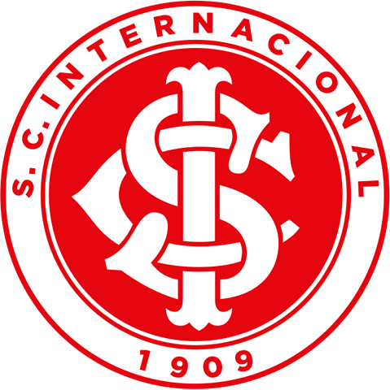 | SC Internacional | 45 | 1927, 1934, 1940, 1941, 1942, 1943, 1944, 1945, 1947, 1948, 1950, 1951, 1952, 1953, 1955, 1961, 1969, 1970, 1971, 1972, 1973, 1974, 1975, 1976, 1978, 1981, 1982, 1983, 1984, 1991, 1992, 1994, 1997, 2002, 2003, 2004, 2005, 2008, 2009, 2011, 2012, 2013, 2014, 2015 e 2016 |
| 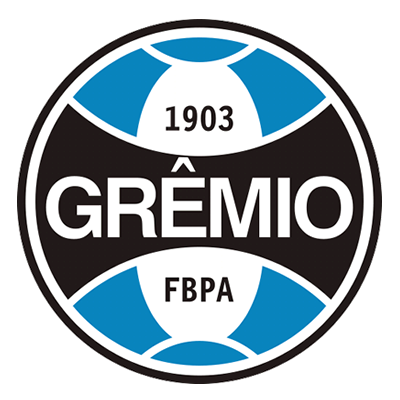 | Grêmio FBPA | 42 | 1921, 1922, 1926, 1931, 1932, 1946, 1949, 1956, 1957, 1958, 1959, 1960, 1962, 1963, 1964, 1965, 1966, 1967, 1968, 1977, 1979, 1980, 1985, 1986, 1987, 1988, 1989, 1990, 1993, 1995, 1996, 1999, 2001, 2006, 2007, 2010, 2018, 2019, 2020, 2021, 2022 e 2023 |
| 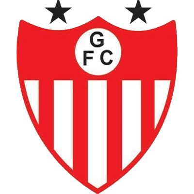 | Guarany FC | 2 | 1920 e 1938 |
| EC Juventude | 1 | 1998 | |
| 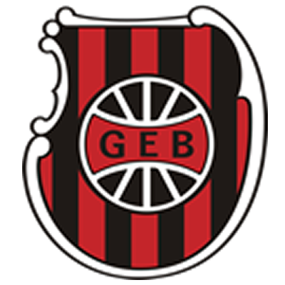 | GE Brasil | 1 | 1919 |
| 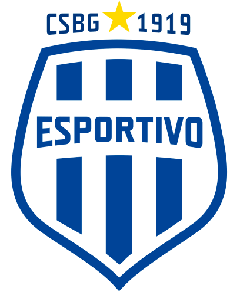 | GE Bagé | 1 | 1925 |
| EC Pelotas | 1 | 1930 | |
| 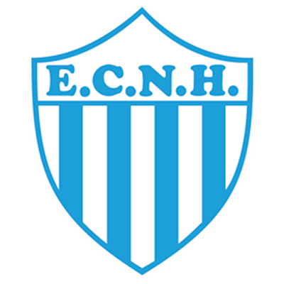 | EC Novo Hamburgo | 1 | 2017 |
| SER Caxias do Sul | 1 | 2000 | |
| 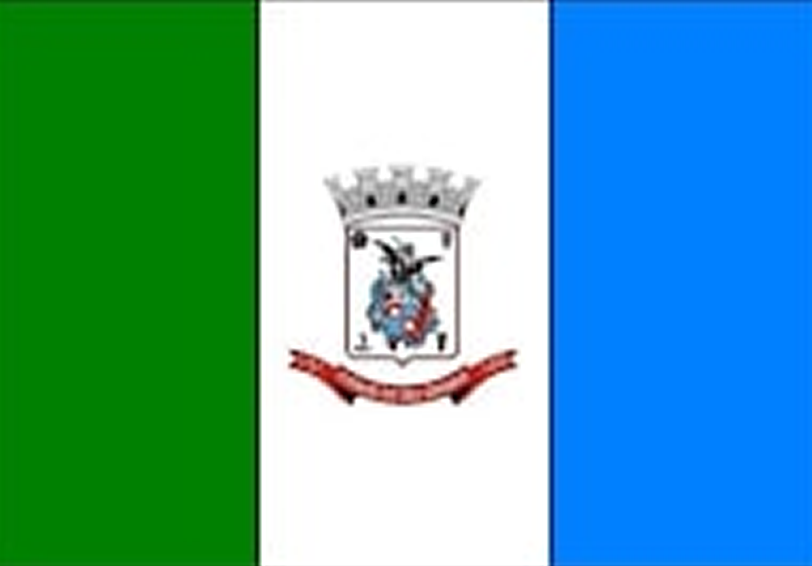 | FC Riograndense | 1 | 1939 |
| 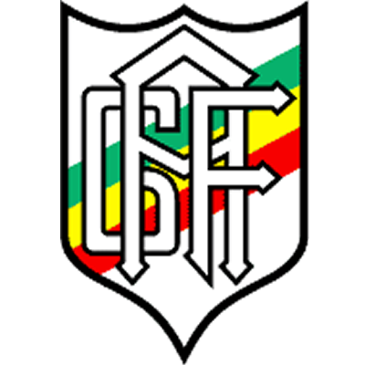 | GA Farroupilha | 1 | 1935 |
| 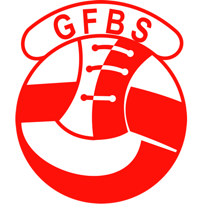 | Grêmio FB Santanense | 1 | 1937 |
| 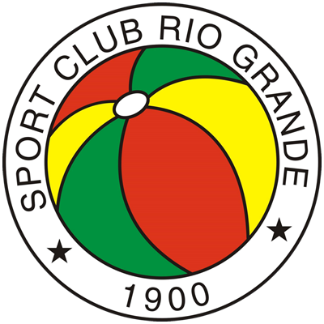 | SC Rio Grande | 1 | 1936 |
| SC Americano | 1 | 1928 | |
| 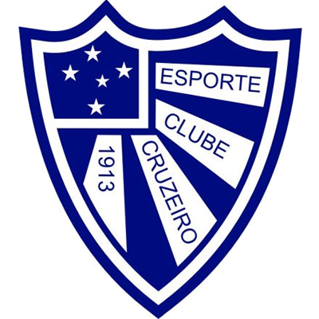 | EC Cruzeiro | 1 | 1929 |
| 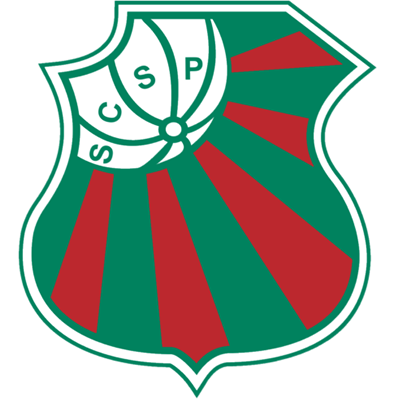 | SC São Paulo | 1 | 1933 |
| 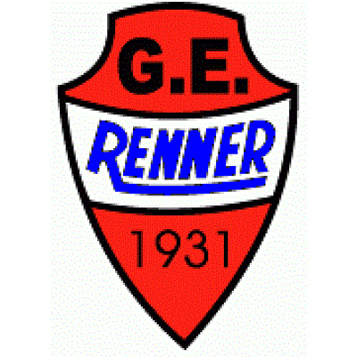 | GE Renner | 1 | 1954 |
| Bandeira | Cidade | Títulos |
| 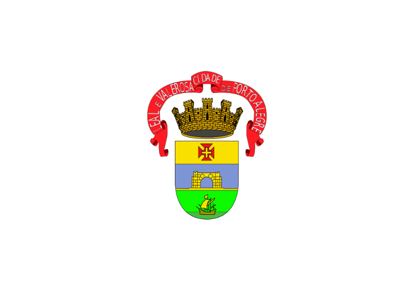 | Porto Alegre | 90 |
| 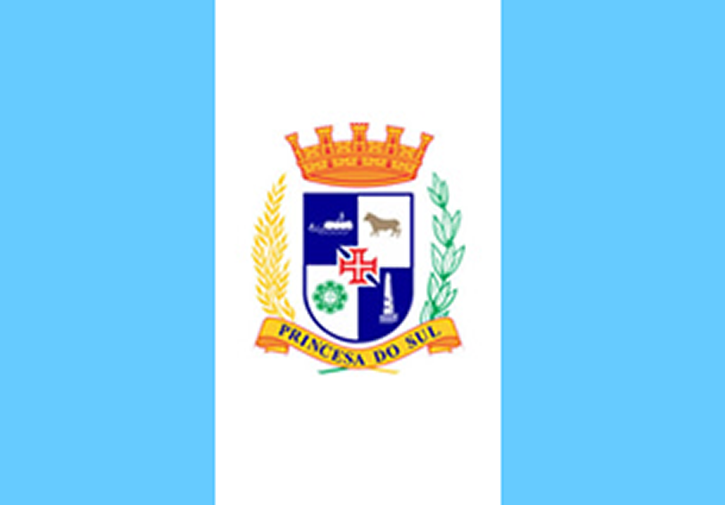 | Pelotas | 3 |
| Bagé | 3 | |
| Rio Grande | 3 | |
| 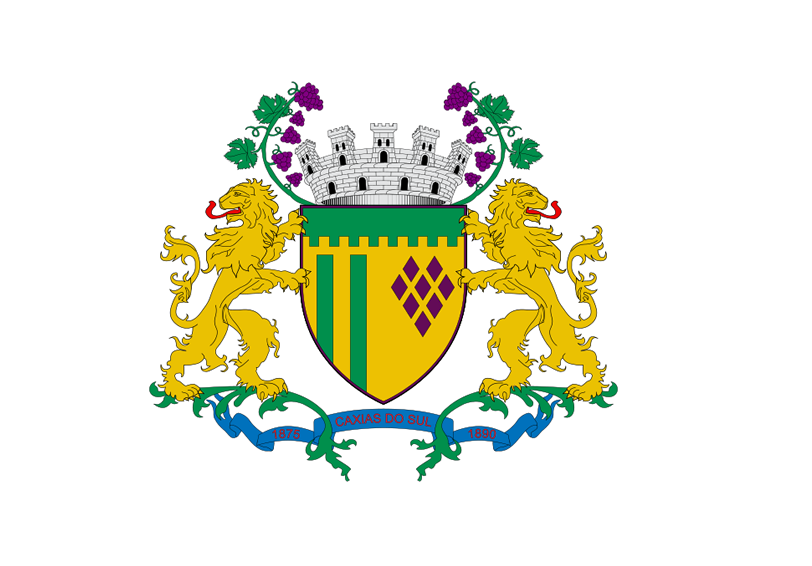 | Caxias do Sul | 2 |
| 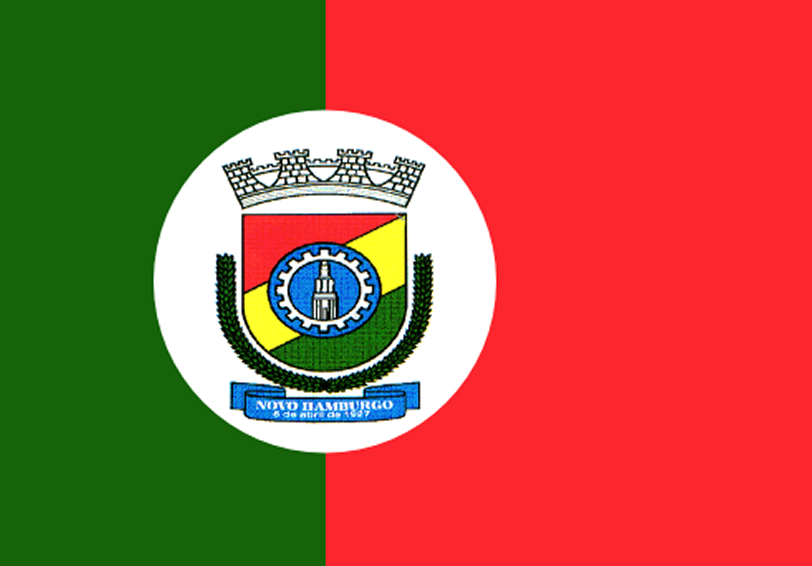 | Novo Hamburgo | 1 |
| 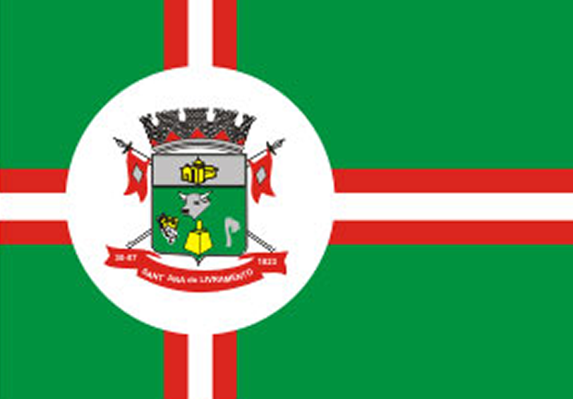 | Santana do Livramento | 1 |